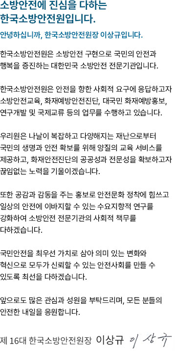

원장 인사말

소방안전에 진심을 다하는 한국소방안전원입니다.
안녕하십니까, 한국소방안전원장 이상규입니다.
한국소방안전원은 소방안전 구현으로 국민의 안전과 행복을
증진하는 대한민국 소방안전 전문기관입니다.
한국소방안전원은 안전을 향한 사회적 요구에 응답하고자
소방안전교육, 화재예방안전진단, 대국민 화재예방홍보, 연구개발
및 국제교류 등의 업무를 수행하고 있습니다.
우리원은 나날이 복잡하고 다양해지는 재난으로부터 국민의 생명과
안전 확보를 위해 양질의 교육 서비스를 제공하고, 화재안전진단의
공공성과 전문성을 확보하고자 끊임없는 노력을 기울이겠습니다.
또한, 공감과 감동을 주는 홍보로 소방안전 정책에 공헌하고
일상의 안전에 이바지할 수 있는 수요지향적 연구를 강화하여
소방안전 전문가의 사회적 책무를 다하겠습니다.
국민안전을 최우선 가치로 삼아 이제는 변화와 혁신으로 모두가
신뢰할 수 있는 안전사회를 만들 수 있도록 최선을
다하겠습니다.
앞으로도 많은 관심과 성원을 부탁드리며, 모든 분들의 안전한
내일을 응원합니다.
제 16대 한국소방안전원장 이상규